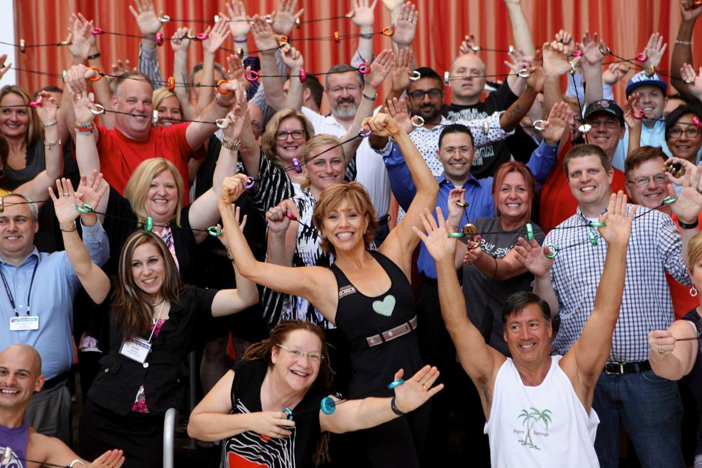
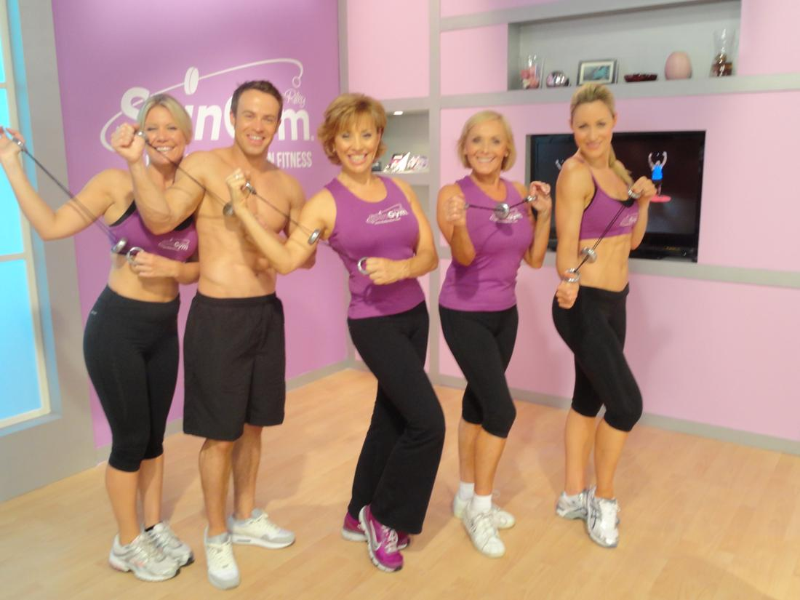
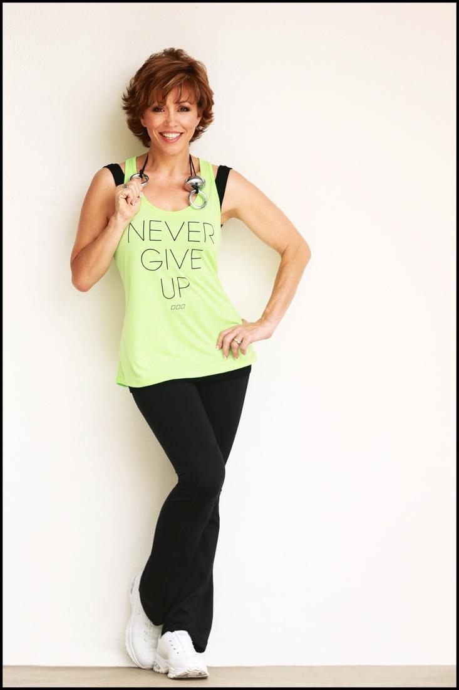

Forbes Riley’s Story Shines in the Huffington Post

Forbes Riley, Former Actress Finds A New Role And Spins It Into Millions
May 30, 2015
FORBES RILEYOne of the reasons I started my website is that I wanted a place for women to come together and dream. We women need to know that we don’t have to hang on to an old dream that has stopped nurturing us — that there is always time to start a new dream. This week’s story is about a woman who hoped to become a famous actress — and sold health and fitness products for others as a side job. But when her acting career wasn’t getting her the gigs she wanted, she knew it was time to embrace the job she’d been doing all along. Now, the infomercial maven has launched her own product line, and she’s become the star of her fitness empire. -– MarloThomas.com
By Lori Weiss
Forbes Riley is the billion-dollar woman. Actually, she’s brought in $2.5 billion, if you add up all the products she’s sold on TV. With 180 infomercials on her resume, she’s sold enough health and fitness products to win a place in the Fitness Hall of Fame.
“I was an actress,” Forbes explained, “and in between plays and parts on soap operas, I’d go on commercial auditions. One day I walked into a room and someone just handed me a pen. And then they told me to sell it. Minutes later, Jake Steinfeld walked out of the control room and said, ‘You’re going to make me millions of dollars.’”
Steinfeld is the celebrity fitness guru better known to audiences as “Body By Jake” and at the time, he had a daily presence on a 24-hour fitness network. Overnight, Forbes became the woman to watch, when at the end of every hour, she’d pitch products like exercise balls and treadmills.
“My acting friends thought I had sold out. But they were all waitressing and I was coming home with five-figure checks.”
The actress who had battled her way to Broadway and made her way on to shows like “The Practice,” “Picket Fences” and “24” was suddenly cast in the role of pitch woman. And while she still saw it as a way to simply make ends meet, her role continued to grow. It wasn’t long before she was standing side by side with her fitness idol, Jack LaLanne, and selling more than a billion dollars in juicers.
And while some might have been happy just collecting the super-sized checks she’d take home after every taping, Forbes still had her sights set on something bigger.
“My greatest downfall,” she said with a sigh, “was that I wanted to be an actress. From the time I was a teenager, I’d wanted to take center stage, but I kept ending up in the chorus.”
So, in between infomercials, Forbes would continue to audition for starring roles. She was even cast as the lead

character on the Fox Network’s “Fashion House” — but then suddenly replaced by Bo Derek before the pilot she filmed went to series.“That’s when my agent said, ‘You’re a really talented actress, but I can’t get you the role you want.’ I was competing with women like Katey Sagal and Kim Cattrall, who had already gotten their big breaks. He told me I needed to get out there and brand myself.”
“And then it hit me. I’m the two-billion-dollar woman. This is who I am, and I have to embrace what works.”
It Ain’t Over: Forbes RileySuddenly Forbes began to see her world in an entirely different way — and opportunity was right there in front of her. She was on the set of QVC in London — there to sell elliptical trainers — when she met a man who had something he referred to as a de-stressor. It was a little silver object, shaped like a yo-yo, and connected by a string on each side.
“He’d go on QVC,” she recalled, “and sell a couple hundred of them. He said that people used them in their office to unwind. He really thought it had run its course. But as I held one, I saw my future in front of me. I could see all the ways it could be used for fitness. It was a gym you could carry in your pocket. I thought, “Suzanne Somers has the Thigh Master. I’m going to have this and I’m going to call it the SpinGym.” The billion-dollar woman was about to cash in.

“I’m a dancer and I’ve been practicing martial arts for 28 years. I understand anatomy and I could see how this little yo-yo could be used to strengthen the body and give women the arms of their dreams. So I re-purposed the product and began creating fitness programs for it.”But it’s one thing to have an idea, and another thing to bring it to life. Even with all the experience and connections that Forbes had, she had never actually brought a new product to market. So she did what any other pitch woman would do — she agreed to go on a new television series produced by the Discovery network, called “Pitch Men,” to get some advice.
“And they laughed at me. They told me it’s never going to work. So I put together a business plan, and it was this: ’Screw you. I’m going to show you!’”
“People appear on these shows all the time and whether they get picked up or not, they’re flooded with business, so I built a website and when the show aired, I got 50,000 hits. That’s when I mortgaged my house and began manufacturing. I sold them out of the trunk of my car, on airplanes — even to TSA screeners when they were checking my bags.”
And then, of course, Forbes took her idea to a more familiar audience — customers who’d been buying other people’s products from her for years. The SpinGym premiered on HSN in 2010. This January, she sold $1.2 million worth of SpinGym in 24 hours on HSN. And now she’s gearing up to shoot her own infomercial in her very own television studio in St. Petersburg, Florida. Forbes Riley has become the star of her own show.“I was called an idiot over and over again,” she laughed, “for pursuing a product no one believed would sell. I chose not to listen. What I’ve learned throughout my career is that you’re going to hear the word “no” a lot. I heard it on Broadway. I heard it in Hollywood. And I heard it with the SpinGym. But what I’ve also learned is all that means is that you’ve asked the wrong question or the wrong person.
I see the word “NO” as ‘Never-ending Opportunity.’ Find someone else and ask again.”